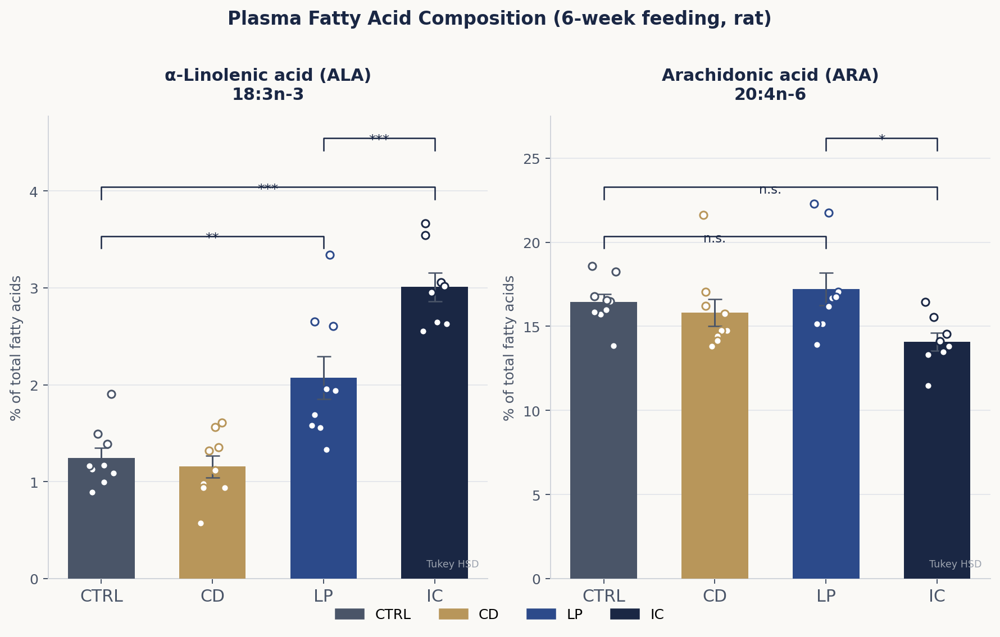
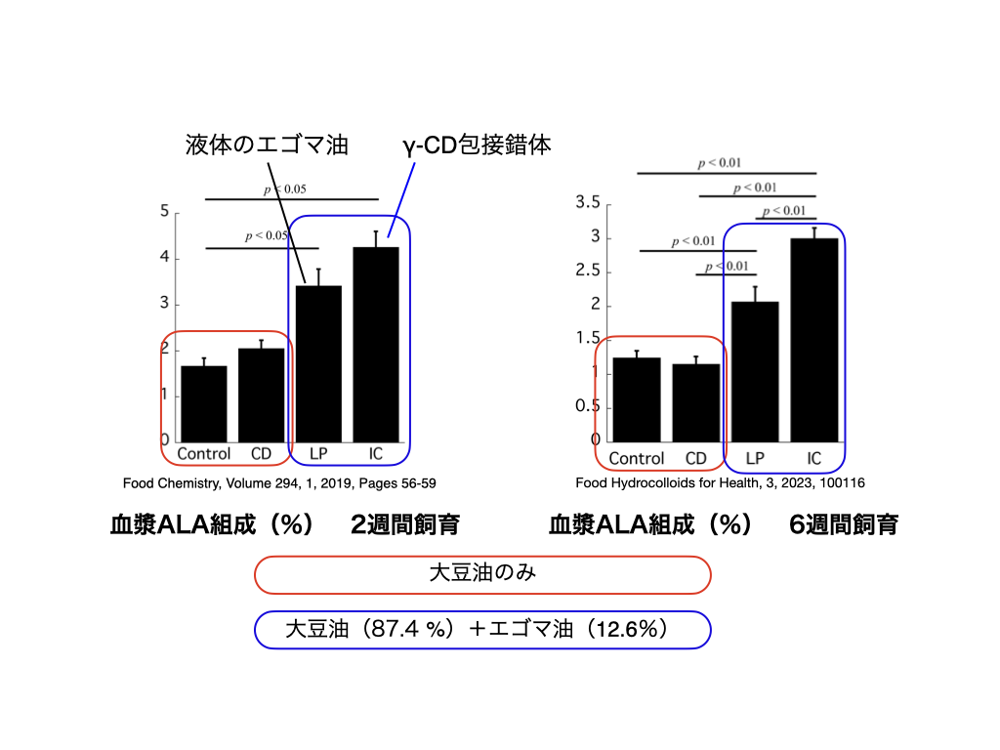
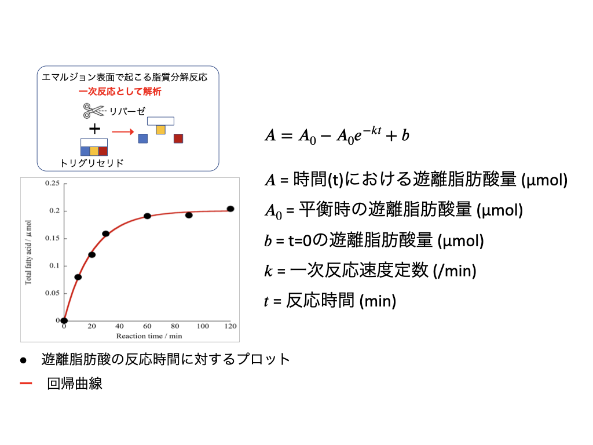

研究の背景
シクロデキストリンは、遊離脂肪酸と包接錯体を形成し、脂肪酸を酸化から守ることが知られていました。私たちはこの技術の応用として、γ-CDとエゴマ油の包接錯体を調製し、その体内吸収性への影響をラットやマウスを用いた動物実験で検証しました。
実験方法と結果
第1段階：包接錯体による吸収向上の発見
エゴマ油のみの群と、γ-CDとの包接錯体として摂取した群を比較したところ、包接錯体群では血漿中のα-リノレン酸およびEPA濃度が有意に上昇し、オメガ6系のアラキドン酸が低下することが分かりました。γ-CDで包接することがエゴマ油の体内吸収を高めることを初めて示した成果です。
第2段階：効果は「共摂取」によってもたらされることの解明
次に、包接錯体群に加えて、γ-CDとエゴマ油を単純に物理混合して摂取した群を設けて比較しました。その結果、包接錯体群と物理混合群の間に有意な差は認められませんでした。この結果は、γ-CDの効果が「包接」という分子カプセル化によるものではなく、γ-CDを一緒に摂取すること自体が腸管での脂質吸収を促進することを示しています。事前に包接錯体を調製しなくても同等の効果が得られる可能性があり、機能性食品開発における重要な知見です。
γ-CDがどのように吸収を促進するかについては、リパーゼによるトリグリセリド分解の促進や、乳化安定化・腸管界面での作用などが考えられますが、詳細なメカニズムは現在も研究中です。
図・データ



関連論文
Yoshikiyo et al. (2023) Food Hydrocolloids for Health — doi:10.1016/j.fhfh.2023.100116
Yoshikiyo et al. (2019) Food Chemistry — doi:10.1016/j.foodchem.2019.04.093
Yoshikiyo et al. (2025) International Journal of Molecular Sciences — doi:10.3390/ijms26167776